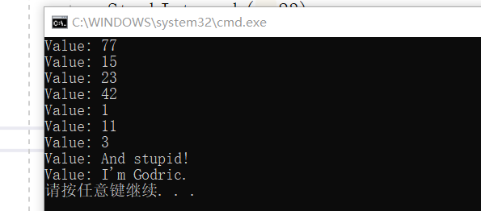

泛型
一般使用的类声明中用到的类型都是特定类型，比如程序员自定义的类型，或者C#定义的类型。有些时候对于某个类型，我们希望这个类型能保存int类型的数据，同时也希望它能保存string类型的数据，如果没有泛型的概念，我们就需要定义两个非常相似的类，一个用来保存int，另一个用来保存string，这样可以满足我们的需求，但是会包含很多重复的工作：复制粘贴一遍int的类，然后将关键字int全部修改为string，这样很容易出错，而且在编译的时候，这两个类型都会进行编译，如果这样的类型较多，会使得生成的程序冗长。
C#中的泛型可以解决这个问题，我们可以使用泛型建立一个满足需求的模板，只需要在使用前声明其数据类型是int还是string，就可以正常使用。
定义一个泛型
定义泛型的时候，与自定义类很相似，只是需要加上泛型占位符，”T”可以是任意的。下面来定义一个简单泛型：
1
2
3
4
5
6
7
8
9
10
11
12
13
14
15
16
17
18
19
20
21
22
23
24
25
26
27
28
29
30
31
32
33
34
35
| class Stack<T>
{
private T[] StackArray;
public int StackPointer = 0;
private const int MaxStack = 10;
public Stack()
{
StackArray = new T[MaxStack];
}
private bool IsFull
{
get { return (StackPointer >= MaxStack); }
}
private bool IsEmpty { get { return StackPointer <= 0; } }
public void push(T x)
{
if (!IsFull)
{
StackArray[StackPointer++] = x;
}
}
public T pop()
{
return (!IsEmpty)
? StackArray[StackPointer--]
: StackArray[0];
}
public void Print()
{
for (int i = StackPointer - 1; i >= 0; i--)
{
Console.WriteLine("Value: {0}",StackArray[i]);
}
}
}
|
上面的代码自定义了栈泛型，可以实现int、string、double等类型数据入栈出栈。
字段StackArray是T类型的数组，用来保存T类型数据，StackPointer是栈的指针，为当前数据的序数。StackArray类里面有两个返回bool值的方法，用来判断栈是否为空或满，以及入栈方法push()和出栈方法pop()，还有一个打印栈内所有数据的方法Print()。
接下来我们使用该泛型建立int和string的数据栈，将一系列数据压入，并打印栈中全部数据，代码如下：
1
2
3
4
5
6
7
8
9
10
11
12
13
14
15
16
17
18
19
20
| static void Main(string[] args)
{
Stack<int> StackInt = new Stack<int>();
Stack<string> StackString = new Stack<string>();
StackInt.push(3);
StackInt.push(11);
StackInt.push(1);
StackInt.push(42);
StackInt.push(23);
StackInt.push(15);
StackInt.push(77);
StackInt.Print();
StackString.push("I'm Godric.");
StackString.push("And stupid!");
StackString.Print();
var intData = new PieceOfData<int>(10);
var stringData = new PieceOfData<string>("Godric");
Console.WriteLine("Value: {0}",intData.Data);
Console.WriteLine("Value: {0}",stringData.Data);
}
|
上述代码通过Stack泛型创建了StackInt实例和StackString实例，通过实例的push()方法将一系列数压入StackInt栈中，并将“I’m Godric。”和“And stupid!”压入StackString栈中，最后通过实例的Print()方法将栈中所有元素按与入栈相反的顺序打印到屏幕，运行结果如图：

总结
C#的泛型可以将已经抽象过的面向对象类进行进一步的抽象，使得程序设计更加灵活，减少重复代码，尤其适用于类结构相似、字段类型不同的情况，可以大大提高编程速度并降低错误率。